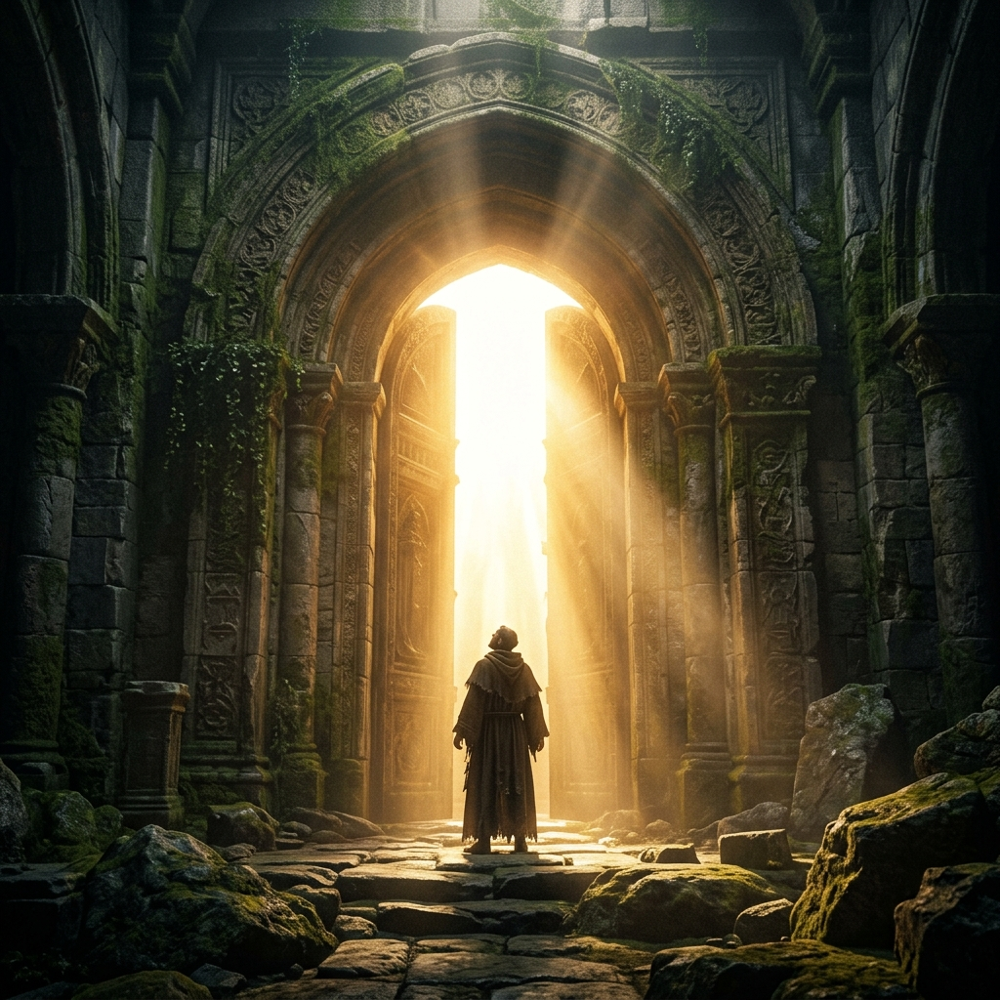

Chapter 1 · The Foundational Framework
THE VICTORIOUS
BELIEVER
The Night I Realised I Had Been Asking the Wrong Question
Victory is not a title you claim. It is a life that consistently reflects God's intention in the natural, visible, measurable dimensions of your actual existence.
🔑 One-Line Thesis
A victorious believer is not someone who never faces difficulty — they are someone whose life is in precise alignment with the will of God, where nothing is purposeless.
📜 The Core Scripture
"Do not conform to the pattern of this world, but be transformed by the renewing of your mind. Then you will be able to test and approve what God's will is — his good, pleasing and perfect will."
— ROMANS 12:2
🗺 The Master Framework Map
Click or tap any node to reveal the deep insight behind it.
FROM GOD'S SIDE
THE THREE MARKS (VISIBLE EVIDENCE)
Illegally
Stranded
Cause Change
FROM YOUR SIDE (MUST BE CULTIVATED)
TWO DIMENSIONS OF THE LAW OF PROCESS
WHAT THE PROCESS BUILDS THROUGH
THE GAP — What Separates You From God's Intention
🧩 Experiential Deep-Dives & Labs
THE ARCHITECTURE BEHIND EVERYTHING
This is not a collection of spiritual ideas assembled loosely. Every chapter, every framework, every assignment is part of a single integrated system. Think of it like arriving in a city with no map — driving slowly, taking wrong turns, wasting time. Then someone hands you a map. Suddenly the roads make sense.
TAP: WHAT VICTORY IS NOT
Many believers genuinely love God — their love is not the problem. But they do not walk fully in His will and their lives reflect mixture. A little of God. A little of chance. A little of confusion. Victory does not live in mixture. Victory lives in alignment.

⚡ LAB 1: THE ALIGNMENT DIAGNOSTIC
Slide the dial to 100 — the point of precise alignment. Belief without alignment produces mixture. Only full, precise alignment activates the framework.
SLIDE TO CALIBRATE ALIGNMENT
THE LEGAL FOUNDATION: COVENANT
Covenant is not background theology — it is the actual ground you stand on when you refuse to accept suffering with no divine purpose. Every promise in this course is a covenant promise. Not a hope. A legal reality established through the blood of Jesus and sealed by the resurrection.
This is your foundation. Build everything else on it.
🔥 LAB 2: THE SUFFERING CRUCIBLE
God allows suffering for only two reasons: His glory or the fulfilment of your assignment. Place a type of suffering into the Crucible to test if it is legal or must be evicted.
THE THREE SEASONS
Within the Law of Process, every believer moves through three distinct seasons. You are not lost — you are on a road you have not been given a map for. Until now.
TAP: THE ENEMY'S TACTICS PER SEASON
In Discovery: Identity confusion. In Pruning: Temptation to exit the process prematurely. Approaching Manifestation: Pride, distraction, and misalignment — so what God releases is mishandled and short-lived.
⚙️ LAB 3: THE LAW OF PROCESS ENGINE
Click through the three seasons to reveal what God is doing in each one, and what the enemy specifically targets to keep you there permanently.
God is revealing who you are, what you carry, and what you have been sent to do.
⚔️ Enemy Tactic: Identity confusion — making you spend years unsure of who you are.
Everything that cannot survive the weight of your assignment is stripped away. This is not punishment — it is preparation.
⚔️ Enemy Tactic: Temptation to exit the process prematurely.
What has been built internally begins to appear externally. The prepared person meets the appointed moment.
⚔️ Enemy Tactic: Pride, distraction, and misalignment — so that what God releases is mishandled.
⚠️ Warning: Belief Without Alignment
Millions believe God exists. Their lives still reflect confusion, fear, lack, and cycles of defeat regardless of how sincerely they pray. Belief without alignment is not victory. It is religion. Victory does not live in mixture. Victory lives in alignment.
You cannot close what you cannot see.
🪞 Reflection Prompts
Is your life showing consistent victory? Not occasional breakthroughs. Not the kind that exists in your declarations but not your daily reality. Consistent. Measurable. Sustained.
Which of the three signs of a victorious believer — inability to suffer illegally, inability to be stranded, authority to cause change — is most underdeveloped in your current experience? What do you sense is the reason?
Which season of the Law of Process are you in right now — discovery, pruning, or emerging — and what is the evidence in your life pointing to that answer?
🔥 The Closing Declaration
THE MAP ACCEPTED
"I am not lost. I am on a road I had not been given a map for — until now. I recognise that victory lives in alignment, and I choose today to stop existing in mixture and to pursue the precise will of God for my life."